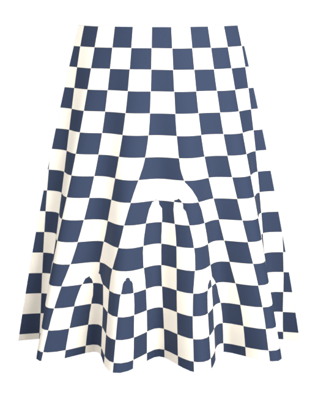

チェック柄
マークした辺を起点に敷く市松模様。
作るもの
モデル上で実寸のそろったマスを、マークした辺から敷き詰めます。
Grid レイヤーごとに、_ と _ の 2 枚のマスクをベイクします。
どの辺をマークするか
パーツごとに、ウエストなどの辺を 1 本マークすれば十分です。マークした辺がある UV アイランドは、全体がマスで埋まります。
2 つの並べ方


設定
Offset Inward0 mm
マスを辺から離れる方向にずらします。
Offset Along0 mm
マスを辺に沿ってずらします。
Angle0°
マスを回転します（45° でバイアス）。
Cell Size8 mm
マスの大きさ。
Wobble
線をランダムに少しゆがませます（0 でまっすぐ）。
Layout
Follow Loops か Unrolled。上の 2 枚を見てください。